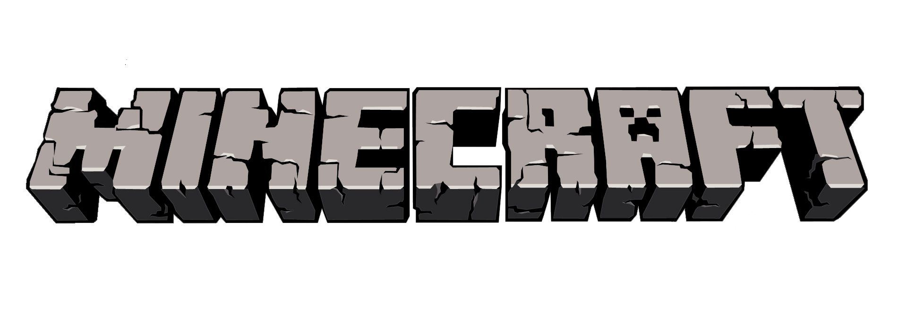

Minecraft — это игра-песочница 2011 года, разработанная Mojang Studios и первоначально выпущенная в 2009 году. Игра была создана Маркусом «Notch» Перссоном на языке программирования Java. После нескольких ранних закрытых тестовых версий, игра была впервые обнародована в мае 2009 года, а полностью выпущена 18 ноября 2011 года, когда Нотч ушел в отставку, а Йенс «Джеб» Бергенстен взял на себя разработку. Minecraft стала самой продаваемой видеоигрой в истории: по состоянию на 2023 год было продано более 300 миллионов копий и почти 140 миллионов активных игроков в месяц. Он был портирован на несколько платформ.
Прохождение игры Майнкрафт заключается в убийстве Дракона края. Тоесть, если убить дракона мы проходим игру. Но чтобы это сделать нужно преодолеть большой путь. Этот сайт посвящён основам, которые могут сделать данный путь немного меньше.
Океан

В океанах всречаются данжи такие как:
Подводная крепость

Потонувший корабль

Подводные руины

Лес

В лесах всречаются данжи такие как:
Лесной особняк

Аванпост разбойников

Пустыня

В пустыне встречаются данжи такие как:
Пустынный храм
.jpg)
Колодец